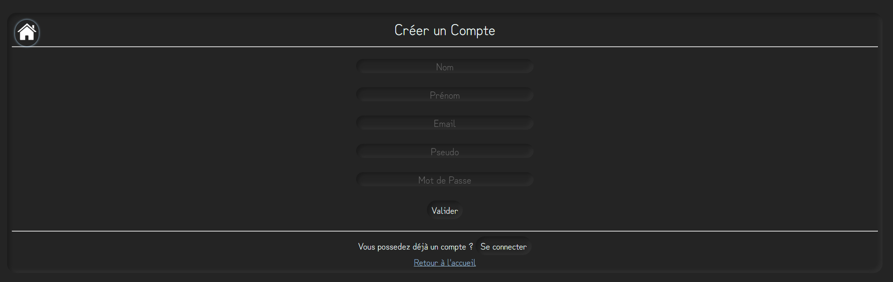
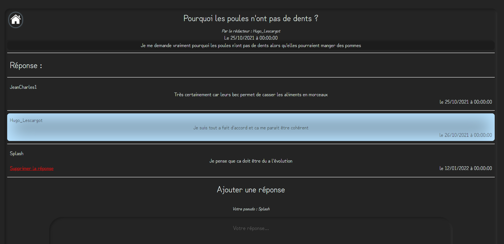

Blog PHP
Ce projet de PHP consistait a réaliser un blog afin de mettre en application les notions de PHP. On a égalemlent pu utiliser du JavaScript pour certaines verifications.
Ce projet nécéssitait des fonctionnalitées particulieres :- Créer des Post
- Créer des commentaires lié à ces posts
- Créer un compte utilisateur
- Pouvoir se connecter au compte
- Pas d'utilisation de framework
On a également du créer une base de données en accord avec les differents besoin que l'on avait, par exemple des utilisateurs, des publications, des commentaires en lien avec ces publications.
Sur cette image, on à la page d'accueil avec les differents posts existants.

Le menu de création de compte requiert differentes informations. En JavaScript, on effectue les verifications
au niveau de la saisie afin d'etre sur que les informations sont correctes

Sur chaque page de sujet, on peut voir le sujet, sa description, ainsi que toute les reponses. On peut egalement differencier par la couleur
si l'auteur à repondu ou si c'est un autre utilisateur
